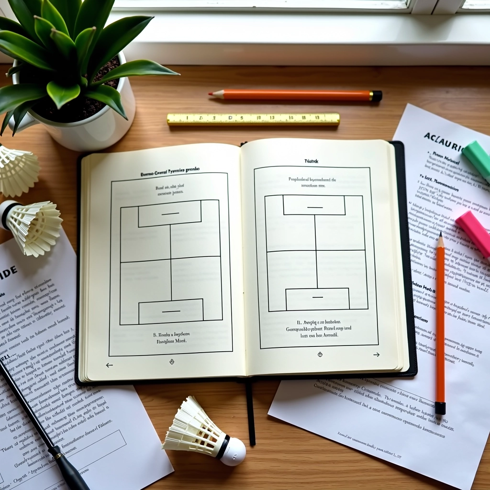

أساسيات الإرسال الخلفي: البداية الصحيحة
تعلم المبادئ الأساسية للإرسال الخلفي من خلال شرح تفصيلي للوقفة الصحيحة وحركة الذراع والتنسيق الكامل.
استكشف الحركات المتقدمة والتعديلات الدقيقة التي تزيد من دقة إرسالك الخلفي وتحكمك بالريشة

كتبه
فريق التحرير
كتبه فريق دقة الريشة للإرسال الخلفي، المركز على تقديم إرشادات عملية وسهلة المتابعة لتحسين الأداء.
إذا كنت قد أتقنت المبادئ الأساسية للإرسال الخلفي، فأنت الآن مستعد للمستوى التالي. التقنيات المتقدمة لا تتعلق بالقوة فقط — بل بالدقة والتحكم والقدرة على قراءة اللعب. نحن سنركز على التعديلات الدقيقة التي تفصل بين اللاعبين الجيدين والاستثنائيين. هذه ليست نصائح سريعة، بل مهارات حقيقية تحتاج إلى وقت وممارسة منتظمة لإتقانها.
ستتعلم كيفية ضبط زاوية الرسغ، وتغيير السرعة، والتحكم بدوران الريشة — كل هذا يحدث في أقل من ثانية. والأهم؟ ستفهم السبب وراء كل حركة.
الدقة في الإرسال الخلفي تعتمد على ثلاثة محاور أساسية: الارتفاع، الاتجاه، والسرعة. لكن المشكلة؟ معظم اللاعبين يركزون على محور واحد فقط، ويهملون الاثنين الآخرين.
تحكم بارتفاع الريشة بدقة — ليس عالياً جداً حتى لا تسقط خارج الملعب، وليس منخفضاً جداً حتى لا يتمكن الخصم من مهاجمتك. المسافة المثالية حوالي 30-40 سنتيمتر فوق شبكة الإرسال.
لا تركز على الخطوط فقط — ركز على المساحات الفارغة. اتجاه الإرسال يجب أن يتغير حسب موقع الخصم. إذا كان بعيداً عن الخط، ارسل نحوه. إذا كان قريباً، ارسل للزاوية الأخرى.
السرعة العالية ليست دائماً الحل. تعلم التنويع — إرسالات سريعة لإرباك الخصم، وإرسالات بطيئة عندما تحتاج للدقة. هذا التنويع يجعلك لا يمكن التنبؤ به.
إذا كان هناك سر واحد للدقة المتقدمة، فهو زاوية الرسغ. معظم اللاعبين يحافظون على زاوية ثابتة — وهذا خطأ كبير.
الرسغ يجب أن يكون مرناً وقابلاً للتكيف. عندما تريد إرسالاً طويلاً، قم بفرد الرسغ قليلاً. عندما تريد إرسالاً قصيراً، اجعل الرسغ أكثر انحناءً. هذا التعديل البسيط — ربما درجتان أو ثلاث فقط — يحدث فرقاً ضخماً في مسار الريشة.
نصيحة عملية: مارس هذا أمام المرآة. راقب زاوية رسغك وقارنها بصورتك المثالية. ستتفاجأ بكم من الاختلافات الصغيرة لم تلاحظها من قبل.
النظرية مهمة، لكن التطبيق أهم. إليك ثلاث تمارين تحتاج إلى ممارستها بانتظام:
ضع مربعات صغيرة في نقاط مختلفة على ملعب الخصم. ابدأ بـ 10 إرسالات متتالية نحو كل هدف. السهل؟ الآن جرب نفس الشيء بعينيك مغلقة — هذا يعزز ذاكرة العضلات. ستندهش من التحسن.
ابدأ بـ 5 إرسالات طويلة، ثم 5 قصيرة، ثم 5 على زاوية. كرر هذا الدورة 4 مرات. هذا يعلم جسمك الانتقال السريع بين أنماط الإرسال المختلفة.
العب نقطة كاملة تبدأ بإرسالك الخلفي. تحديك هو أن تربح النقطة بدقة إرسالك — وليس بقوتك. هذا يجعل الإرسال واقعياً وضمن ضغط اللعب الفعلي.
تعمق أكثر في فنون الإرسال الخلفي
تعلم المبادئ الأساسية للإرسال الخلفي من خلال شرح تفصيلي للوقفة الصحيحة وحركة الذراع والتنسيق الكامل.

خطة تدريب شاملة لمدة أسبوع تركز على تطوير قوة الإرسال الخلفي والتحكم بالتوجيه والممارسة المنتظمة.

تحديد الأخطاء الأكثر شيوعاً في الإرسال الخلفي وطرق عملية لتصحيحها وتجنبها في المباريات الفعلية.
التقنيات المتقدمة للإرسال الخلفي ليست سحرية — هي ناتجة عن فهم عميق وممارسة مركزة. كل تعديل صغير في زاوية الرسغ، كل تجربة جديدة للسرعة، تضيف طبقة أخرى من التحكم إلى لعبتك.
الشيء الجميل؟ أنت لا تحتاج إلى أن تكون محترفاً لتستفيد من هذه التقنيات. ابدأ بتمرين واحد، أتقنه، ثم انتقل للتالي. خلال بضعة أسابيع، ستشعر بالفرق في ملعب اللعب. ستصبح إرسالاتك أكثر دقة، أقل قابلية للتنبؤ، وأكثر فعالية.
والأهم؟ ستستمتع باللعبة أكثر عندما تشعر أنك تحت السيطرة الكاملة.
المعلومات المقدمة في هذا المقال هي بغرض تعليمي وإعلامي فقط. كل لاعب لديه احتياجات وقدرات فريدة. إذا كنت تعاني من إصابة أو ألم أثناء الممارسة، توقف فوراً واستشر مدرباً محترفاً أو متخصصاً في الطب الرياضي. الممارسة الآمنة والمنتظمة مع مراقب مؤهل ستحقق لك أفضل النتائج.